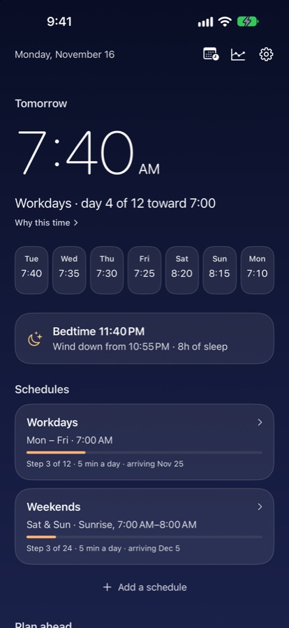
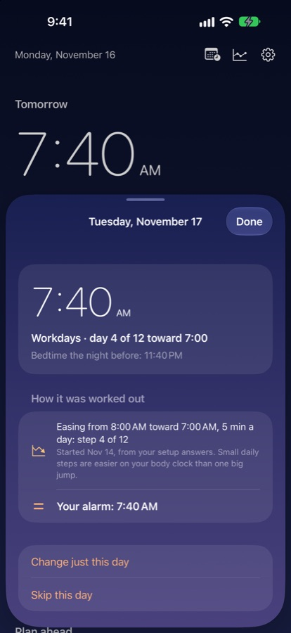
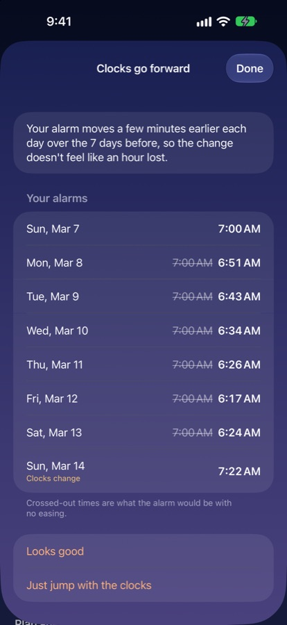
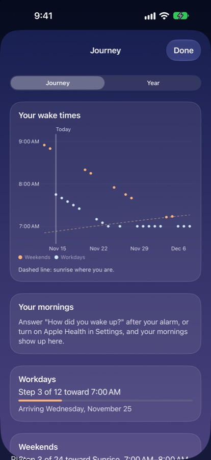
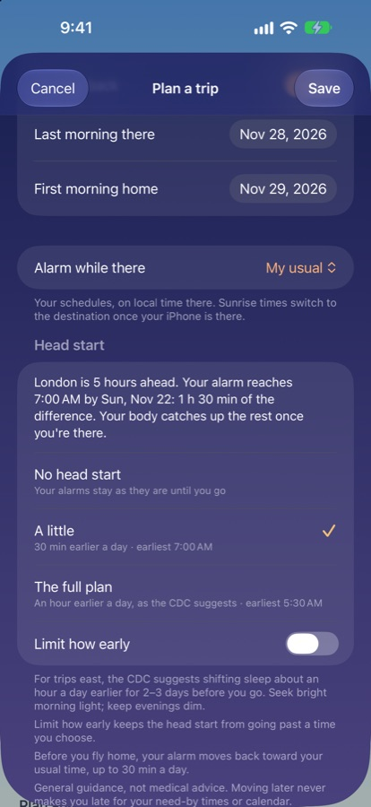
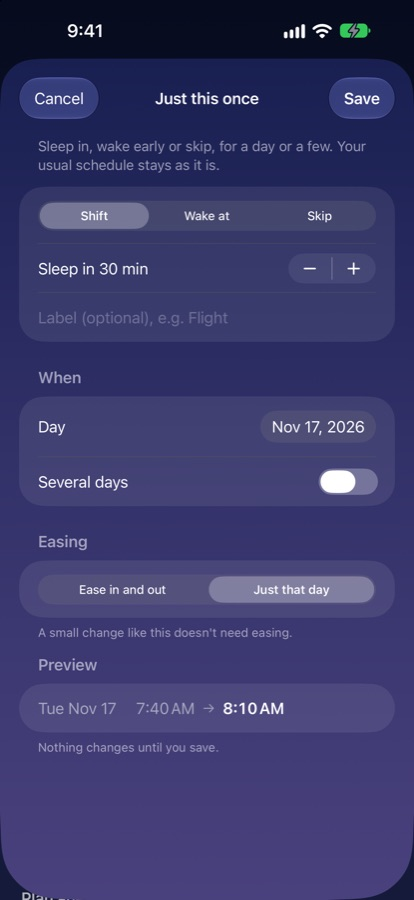

Press kit
Slowdawn, for the press.
Everything you need to write about Slowdawn: the facts, ready-to-use descriptions, screenshots, the icon and a short video. Free to use in coverage of the app.
Launching on the App Store on Tuesday, December 1, 2026.
In one line
Slowdawn is an iPhone alarm that moves your wake-up time a few minutes a day, so you get to a new time without the shock, and it plans ahead for weekends, trips and clock changes.
Fact sheet
- App
- Slowdawn
- Tagline
- The alarm that eases you in
- Made by
- Justin Farrar, independent developer
- Launch
- December 1, 2026, on the App Store
- Runs on
- iPhone with iOS 26 or later, with an Apple Watch app, widgets and Lock Screen controls
- Price
- Free to download, with a 14-day free trial of everything. Slowdawn Pro is $1.99 a month, $9.99 a year, or $19.99 once.
- Free for good
- Alarms, the plan you set up, clock-change easing, sunrise alarms with an offset, backup alarms, widgets and the Lock Screen
- Privacy
- No account, no servers, no ads, no tracking. Apple's privacy label: Data Not Collected.
- Availability
- 148 countries and regions at launch, in English
- Website
- slowdawnapp.com
- Press contact
- hello@slowdawnapp.com
Short description
About 55 words, for a roundup or a listing.
Slowdawn is an iPhone alarm that moves your wake-up time gently, a few minutes a day, until the new time feels normal. It plans around weekends, time off, trips and clock changes, and every alarm shows a plain reason for its time. Free to try for 14 days; no account, no tracking.
Longer description
About 180 words.
Most alarms only know one time. Slowdawn knows where you are and where you want to be. Tell it when you need to be up and when you get up now, and it moves your alarm a few minutes each morning until you're there, because small daily steps are easier on the body clock than one big jump.
It plans around real life. Weekends get a little lie-in without wrecking Monday. Time off eases you back to work instead of dropping you in. Before a trip, it can give you a head start on the new time zone, and it shows exactly how early that will make your mornings before you agree to it. Twice a year, it spreads the clock change across the week.
Every alarm comes with a reason, like "Workdays · day 4 of 12 toward 7:00", and tapping any morning shows how its time was worked out. Alarms are built on Apple's AlarmKit, so they ring like the Clock app's, even on silent.
Slowdawn has no account and no servers: plans, location and sleep data stay on the iPhone.
What's different about it
- The alarm moves, gently. A plan shifts your wake-up time a few minutes a day toward the time you choose, at a pace you pick.
- Every alarm explains itself. Each morning shows why it's set for that time, and any change is previewed before it's saved.
- The clocks change; you don't jump. Daylight saving is spread across the week before it happens. This is free and on by default.
- Sunrise, within limits. Wake with sunrise or first light where you live, never earlier or later than the times you set.
- Ready by a date. For a new job or school term, it works backwards so you're on the new time a few days early.
- Trips with a head start. It shifts you toward the destination's time before you fly, and says plainly how early your alarm will get.
- Private by design. No account, no tracking, and nothing leaves the phone.
Screenshots
Plain screens from the app. The download has all ten app screens at full size, plus the ten App Store screenshots with captions.






- Everything ZIP · 44 MB: icon, 10 app screens, 10 App Store screenshots, 26-second preview video
- App icon PNG · 1024 × 1024

About the maker
Slowdawn is made by Justin Farrar, a travel advisor in Washington, D.C. Abrupt changes to his wake-up time have always hit him hard: the clocks springing forward, a new work schedule, the first Monday back after time off. He wanted an alarm that would ease him into a new time on its own, without him having to lift a finger. Slowdawn is his first app, and the one he's wanted to make for years.
Writing about Slowdawn?
Ask for early access before launch or a free Pro code, interviews, or anything else you need. A real person replies.
hello@slowdawnapp.com